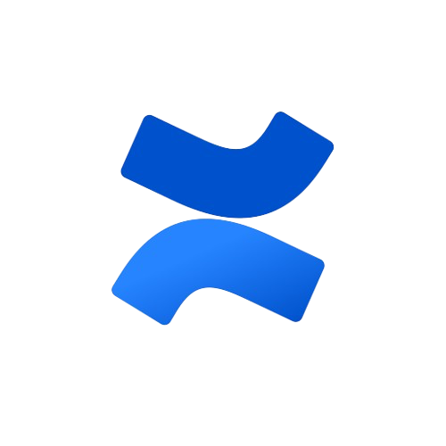

Ocean Soundscape & Taxonomy
Taxonomy
A list of sound labels has been compiled under a Taxonomy for Passive Acoustic Data Classification. This taxonomy serves as the foundational label set for our ML anomaly autodetector to automate soundscape classification.
- Anthropophony
- In-Air Source (Aircraft, Snowmobile)
- Industrial Activity (Dredging, Mining, Pile driving)
- Sonar (Fisheries, Naval)
- Submersible (Human-occupied vehicle, Remotely operated vehicle)
- Surveying (Airgun, Explosive)
- Vessel (Cargo, Fishing, Icebreaker, Military, Passenger, Pleasure, Sailing, Research, Tanker, Tug)
- Unknown Anthropophony
- Biophony
- Crustacean (Crab, Lobster, Shrimp/Snapping shrimp)
- Fish (Vent fish, Fish chorus)
- Marine Mammal
- Cetacean
- Baleen Whales (Bowhead, Blue, Fin, Gray, Humpback, Minke, North Atlantic Right, North Pacific Right, Sei)
- Toothed Whales
- Beaked (Baird’s, Cuvier’s)
- Beluga
- Dolphin (Atlantic Spotted, Common Bottlenose, Common, Northern Right Whale, PAcific White-Sided, Risso’s, Striped)
- False Killer Whale
- Killer Whale/Orcas (Bigg’s, Northern Resident, Southern Resident, Offshore)
- Narwhal
- Pospoise (Dall’s, Harbour)
- Sperm
- Pinniped (Seal, Walrus)
- Cetacean
- Unknown Biophony (Bioacoustic communication signal, Echolocation click, Click train, Drumming, Grinding, Snapping, Stridulation, Vocalization)
- Attributes: Song, Moan, Upsweep, Downsweep
- Geophony
- Environmental (Flow noise, Ice cracking, Iceberg collision, Tsunami)
- Geology
- Bubbling (Methane seep)
- Earthquake
- Hydrothermal vent (Chimney collapse, Magma)
- Sedimentation
- Turbidity current
- Weather
- Lightning
- Precipitation (Rain, Snow, Hail)
- Wind
- Waves
- Attributes: Continuous vs Impulsive
- Instrumentation
- Hydrophone Contact
- Malfunction (Clipping, Data Gap, Frequency dropout, Sensitivity change, Time dropout)
- Other ONC Equipment (ADCP, Camera, Mooring noise/Chain noise)
- Self-Noise (Acoustic, Non-Acoustic/Tonal)
- Unknown Instrumentation
References
This hierarchical format was inspired by Google’s AudioSet.
Literature review references which informed this taxonomy:
- Ainslie, M.A., C.A.F. de Jong, S.B. Martin, J.L. Miksis-Olds, J.D. Warren, K.D. Heaney, C.A. Hillis, and A.O. MacGillivray. (2020). Project Dictionary: Terminology Standard. Document 02075, Version 1.0. Technical report by JASCO Applied Sciences for ADEON.
- Ainslie, M. A., Halvorsen, M. B., & Robinson, S. P. (2022). A Terminology Standard for Underwater Acoustics and the Benefits of International Standardization. IEEE Journal of Oceanic Engineering, 47(1), 179–200. https://doi.org/10.1109/joe.2021.3085947
- Aslam, M. A., Zhang, L., Liu, X., Irfan, M., Xu, Y., Li, N., Zhang, P., Jiangbin, Z., & Yaan, L. (2024). Underwater sound classification using learning based methods: A review. Expert Systems with Applications, 255, 124498. https://doi.org/10.1016/j.eswa.2024.124498
- Irfan, M., Jiangbin, Z., Ali, S., Iqbal, M., Masood, Z., & Hamid, U. (2021). DeepShip: An underwater acoustic benchmark dataset and a separable convolution based autoencoder for classification. Expert Systems with Applications, 183, 115270. https://doi.org/10.1016/j.eswa.2021.115270
- Krause, B. (2008). Anatomy of the Soundscape: Evolving Perspectives. Journal of the Audio Engineering Society, 56, 73–80.
- Parsons, M. J. G., Lin, T.-H., Mooney, T. A., Erbe, C., Juanes, F., Lammers, M., Li, S., Linke, S., Looby, A., Nedelec, S. L., Van Opzeeland, I., Radford, C., Rice, A. N., Sayigh, L., Stanley, J., Urban, E., & Di Iorio, L. (2022). Sounding the Call for a Global Library of Underwater Biological Sounds. Frontiers in Ecology and Evolution, 10. https://doi.org/10.3389/fevo.2022.810156
- Recommendation ITU-R M.1371-5 (2014): “Technical characteristics for an automatic identification system using time-division multiple access in the VHF maritime mobile band”.
- Santos-Domínguez, D., Torres-Guijarro, S., Cardenal-López, A., & Pena-Gimenez, A. (2016). ShipsEar: An underwater vessel noise database. Applied Acoustics, 113, 64–69. https://doi.org/10.1016/j.apacoust.2016.06.008
- Underwater Acoustics – Terminology, ISO 18405:2017, 2017. [Online]. Available: https://www.iso.org/standard/62406.html
- Z. Li, S. Xiang, T. Yu, J. Gao, J. Ruan, Y. Hu, T. Liu, & Y. Fu. (2024). Oceanship: A Large-Scale Dataset for Underwater Audio Target Recognition. In Lecture Notes in Computer Science (pp. 475–486). Springer Nature Singapore. https://doi.org/10.1007/978-981-97-5591-2_40
Useful Links

Confluence Documentation